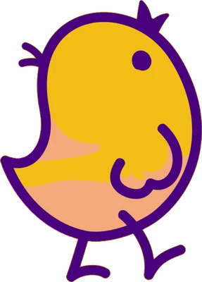

학습과 추론
0장 · 1회차같은 모델이라도 하는 일이 다릅니다. 학습은 가끔, 크게 한 번. 추론은 서비스가 살아 있는 동안 요청마다 계속 일어납니다.
TRAINING
학습: 병아리 학교
- 데이터를 보며 가중치(모델의 지식)를 만든다
- 몇 주짜리 큰 작업을 몇 번 한다
- 얼마나 잘 배웠나(품질)가 중심
INFERENCE
추론: 실전에서 짹짹
- 정해진 가중치로 입력마다 답을 만든다
- 요청이 올 때마다, 동시에 여러 사람에게
- 얼마나 빨리, 얼마나 싸게, 얼마나 정확하게
속도첫 글자가 언제 나오나(TTFT), 그 뒤로 얼마나 빨리 이어지나(초당 토큰)
비용GPU 한 장으로 손님을 몇 명 받나(처리량), 놀고 있는 GPU는 없나
품질빨라지려고 줄인 정밀도와 지름길이 답을 망치지 않았나
책 1장의 출발점이 이것입니다. 세 가지를 모두 최대로 만들 수는 없으니, 내 서비스에 맞는 균형을 먼저 정해야 합니다.
삐약코어 실험실
PREFILL · DECODE · BATCH손님의 질문을 프리가 한입에 삼키고(프리필), 디코가 한 알씩 대답합니다(디코드). 손님을 많이 받을수록 GPU 전체로는 이득이지만 손님 한 명은 기다리는 시간이 늘어납니다. 막대를 움직이고 "짹짹 시작"을 눌러 보세요.
 프리필: 질문 전체를 한 번에 처리 (계산이 몰림)
프리필: 질문 전체를 한 번에 처리 (계산이 몰림)

디코드: 한 토큰씩 생성 (매번 가중치와 KV 캐시를 메모리에서 읽음)"짹짹 시작"을 누르면 삐약코어가 대답을 시작합니다.
–첫 토큰까지 (TTFT)
–토큰 사이 간격
–손님 한 명이 받는 전체 시간
–GPU 전체 처리량 (토큰/초)
손님 수를 늘리면?
● 전체 처리량(왼쪽 눈금) ● 한 명의 전체 시간(오른쪽 눈금) · 세로선은 지금 배치
설명용 모형입니다. 수치는 계산 방식을 단순화해 만든 것이라 실제 GPU·모델·엔진과 다릅니다. 숫자보다 모양을 보세요: 배치를 키우면 처리량은 크게 오르고, 한 명의 대기 시간은 천천히 늘어납니다. 자세한 계산은 2회차(2.2), 3회차(2.4), 9회차(배치·자동 확장)에서 다룹니다.
책 지도
0장 ~ 7장여덟 장을 10회차에 나눠 읽습니다. 장마다 읽는 회차를 눌러 일정표로 갈 수 있습니다.
용어 카드
조수가 박사님께 받아 온 묶음처음 보면 헷갈리는 말들입니다. 책 부록 A(Inference Glossary)에 더 많은 용어가 있습니다.
참고 논문 열 편
논문 발제용회차마다 한 편씩. 오래된 고전(Roofline, Transformer)부터 요즘 추론 엔진의 바탕(PagedAttention, SGLang, Orca)과 평가·보안 논문까지 이어집니다.